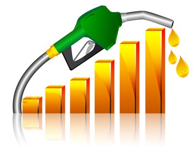
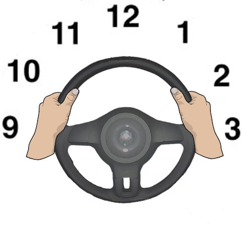
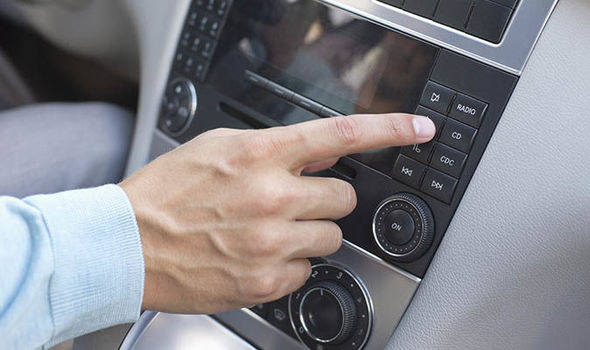
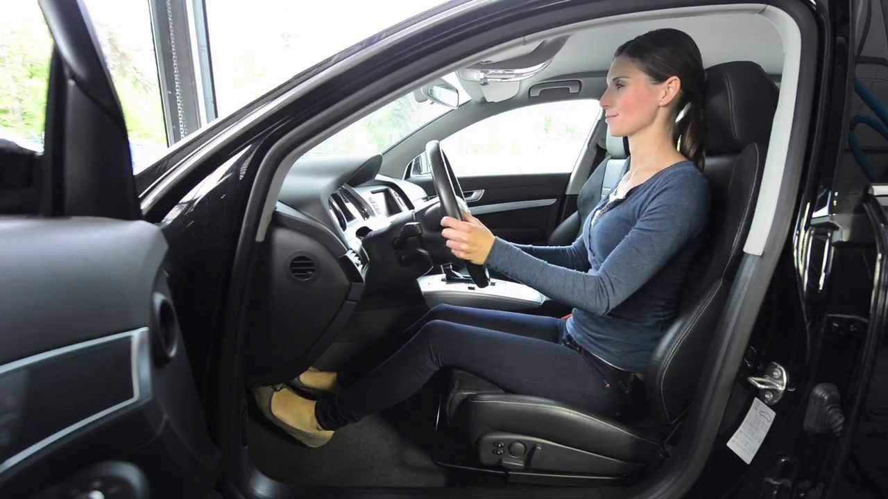
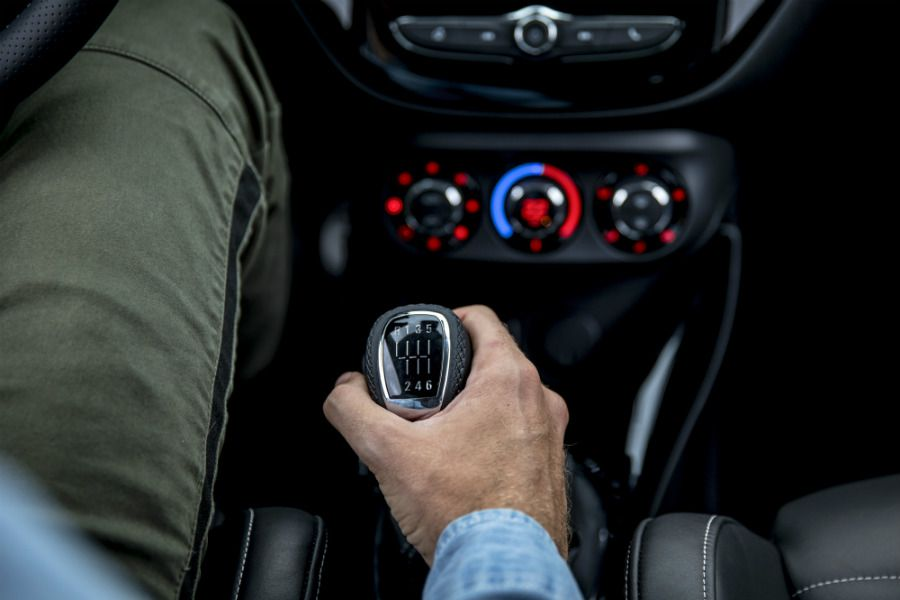
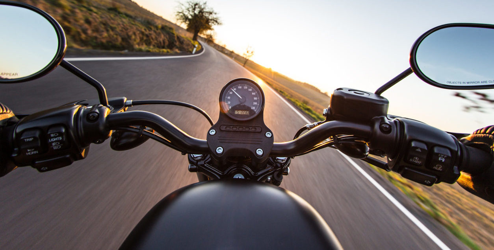
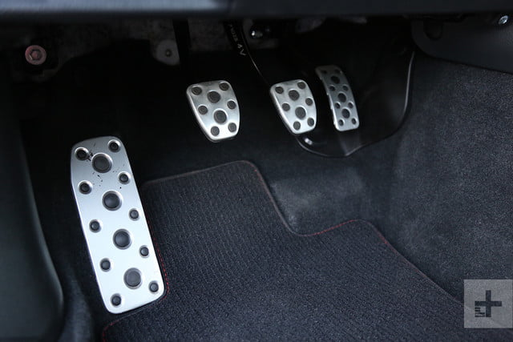
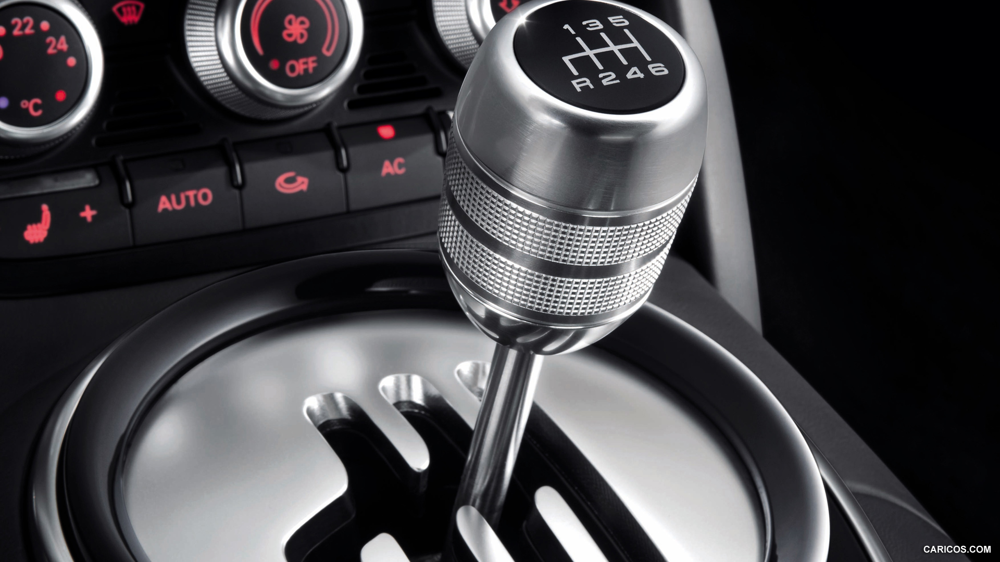

Artículos
Primera elección, ¿Diésel o Gasolina?
Acabas de adentrarte en el mundo del motor, o quizá ya llevas muchos años pero aún te cuesta decidir entre estas dos alternativas, no te preocupes porque en este artículo haremos lo posible para resolver tus dudas.
¿Para qué lo quieres?
Lo primero que debemos tener en cuenta al elegir el tipo de motor es el uso que le vayamos a dar, esto es muy sencillo, si pretendemos hacer recorridos relativamente cortos y no usar el coche mas de unos 30.000 km al año entonces te compensa mas un gasolina.
Si por el contrario tus recorridos son largos, o viajas mucho a la larga te merece la pena comprar un coche con motor diésel.
¿A qué se debe esto? Simplemente esto es así debido a que los motores diésel generalmente consumen menos que un motor gasolina. Por otro lado, un motor diésel es mas caro que un motor gasolina en todos sus aspectos, ya sea en el momento de la adquisición como a la hora de tener que llevarlo al taller ya que cualquier reparación será mas costosa en un diésel. Por eso nos conviene saber cuánto utilizaremos el coche, para ver si realmente nos sale rentable la compra de un coche diésel.
¿Precio del combustible?
Sí, aparte de que un motor gasolina consume más, encima el combustible es más caro, pero la diferencia de precio por litro cada día es menor ya que hace poco tiempo el diésel estaba mucho más barato que la gasolina, pero por temas de impuestos y contaminación (que cubriremos en otro artículo detalladamente) han subido bastante su precio acercándose prácticamente al precio de la gasolina.

Alternativas
En el mercado no solo hay motores diésel o gasolina también se están poniendo muy de moda los vehículos eléctricos o híbridos de los cuales ya hablaremos en futuros artículos.

Opinión personal
En mi opinión yo casi siempre me decantaría por comprar un coche con motor gasolina, ya que yo soy un apasionado del mundo del motor.
Las pocas ocasiones que se me ocurren en las que compraría un vehículo diésel serían si fuera a necesitar un vehículo tipo furgoneta para el trabajo o viajar por el mismo motivo recorridos muy largos y frecuentes.
Mis mayores razones para ser un enamorado de la gasolina son sin duda y aunque a mucha gente le parezca una tontería el mejor sonido, menores vibraciones procedentes del motor, mayor suavidad del mismo y sin falta mencionar ese sentimiento que te otorga conducir un motor gasolina, el cual me gustaría describir pero tendréis que probarlo para saberlo.
Autor: Jorge Zakour
6 cosas que seguramente hagas mal al conducir rápido
La posición de tus manos
Mover el volante con pequeños movimientos de las manos, mover una mano sobre otra o conducir con una sola mano son malos hábitos a la hora de querer conducir a toda velocidad cogidos de la conducción diaria.
El problema se da porque en estas técnicas hay veces que no tenemos las dos manos sobre el volante perdiendo así conexión con el coche.

La técnica correcta es tener las manos en las posiciones 9 y 3 del reloj todo el tiempo incluso si necesitamos cruzar los brazos para girar más de esta forma tendrás la mayor conexión posible con las ruedas delanteras.
Escuchar música alta

Conducir mientras escuchas a todo volumen tu música favorita es divertido no nos vamos a engañar pero esto afectará a tu capacidad para concentrarte y sobre todo a tu tiempo de reacción, está demostrado que escuchar música a 95 decibelios aumenta tu tiempo de reacción un 20%.
Además, la música alta camufla el sonido del motor lo que hace que la sensación de velocidad y percepción del coche sea diferente.
Sentarte de forma incorrecta

Puede sonar evidente pero la posición de conducción es una de las primeras cosas que te enseñaría un instructor pero encontrar la posición correcta no debería ser muy difícil.
Primero, presiona el embrague hasta el fondo, tu pierna debe de estar ligeramente doblada si está demasiado alejada acércate. Sobre los brazos debes tener en cuenta que tus muñecas deben llegar a asentarse en la parte superior del volante sin que tus brazos estén completamente rectos, utiliza la inclinación del asiento para esto. También, intenta tener el asiento lo más bajo posible para bajar el centro de gravedad del coche y estar más en conexión con la carretera. Y si tu asiento tiene ajuste lateral ponlo apretado a tu cuerpo para no andar de un lado a otro en las curvas.
No mirar hacia delante
De nuevo parece algo obvio pero este punto causa más accidentes de lo que parece, lo importante es levantar tu punto de vista, en otras palabras, necesitas mirar lo más lejos posible lo que ayuda a anticipar curvas o cualquier cosa que te puedas encontrar.
Dejar el coche ir en punto muerto

Cuando conduces un coche o moto deportivo siempre debería estar el vehículo o acelerando o frenando, si estás en mitad de una curva y no estás usando ni el acelerador ni el freno el coche no estará balanceado.
Deberías mantener el coche bajo carga todo el tiempo para asegurarte que se mantiene balanceado, cosas como frenar con el pie izquierdo te pueden ayudar a esto.
Elegir el sitio y tiempo incorrectos

Cuando vayas a conducir rápido, elegir la carretera y la hora adecuadas es esencial. No puedes hacer este tipo de cosas en plena tarde y en ciudad.
Muchos motoristas por ejemplo lo que hacen es levantarse muy pronto e irse a carreteras alejadas para evitar el mayor número de problemas posibles.
Conclusión
Todos estos son consejos que deberías seguir si quieres conducir rápido, te harán mejor conductor y te ayudarán a disfrutar más de lo que a todos nos gusta.
Autor: Jorge Zakour
¿Por qué nos gusta conducir coches manuales?
Para los que estáis más perdidos en el tema un coche puede llevar dos tipos de cajas de cambios, la caja de cambios es el elemento del coche encargado de obtener en las ruedas el par motor adecuado en cada momento, esto se consigue cambiando entre diferentes engranajes cada uno con sus características lo que conocemos como las marchas del coche.
Tipos de cajas de cambios
Pues bien, empecemos por las cajas de cambios automáticas, como su propio nombre indica es aquella en la que los cambios se producen de forma automática, el ordenador del coche por así decirlo es el encargado de decidir en qué marcha debe ir el coche en cada momento según las exigencias del conductor y externas.
Luego tenemos las cajas de cambios secuenciales, básicamente son cajas de cambios automáticas en las que el conductor puede decidir ya sea mediante levas en el volante o una palanca en la consola la marcha en cada momento.
Y por último están las cajas de cambios manuales, su funcionamiento de cara al conductor es más complicado ya que no están automatizadas, para poder cambiar de marcha es necesario usar el embrague y la palanca de cambios sin meternos en el ámbito técnico.

¿Entonces, por qué preferimos las cajas de cambios manuales?
Y es que a estas alturas de siglo, a pesar de que las cajas de cambios automáticas cada vez están más presentes, ofreciendo mayor rapidez de cambio, sencillez de conducción e incluso menor consumo, algunos fanáticos todavía preferimos que nuestro coche sea manual.
Y es que cuando conducimos un coche manual simplemente nos sentimos mucho más conectados, te tienes que sentir mucho más conectado con el coche para conducir un manual, al conducir un automático te puedes llegar a sentir como un pasajero más y eso no es esencia de conducción.

Por poner una comparación, es como cocinar, actualmente casi cualquier comida podemos comprarla pre-cocinada meterla al horno o al microondas unos cuantos minutos y estará lista, es barata, sencilla y lleva menos tiempo pero aun así muchos prefieren cocinar como se ha hecho toda la vida, o comer los platos que tu madre te prepara con tanto amor. Porque te tienes que esforzar, tienes que saber lo que haces y eso te da una recompensa, una satisfacción.
Conducir no son todo números, no es todo eficiencia ni rapidez, son sentimientos, saber que eres tú el que estás manejando el vehículo y que la puedes cagar, pero que cuando sale bien nadie estará mas orgulloso que tú.
Autor: Jorge Zakour